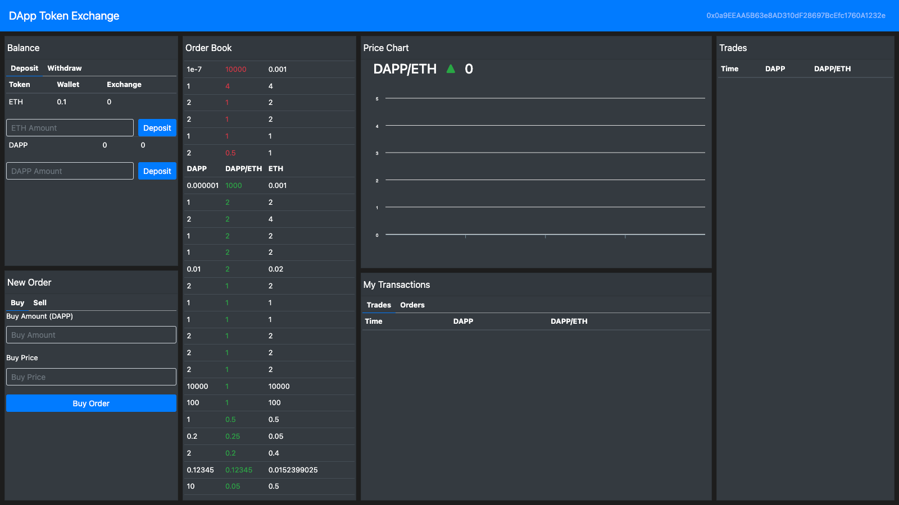

I am making a career transition to Blockchain Development focused on Decentralized Finance. When bitcoin came onto the scene, it got me interested. That interest can safely be called an obsession now. I have spent the last year teaching myself how to build smart contracts and how blockchains work. I lean on two content creators on Youtube who have paid courses, regualar youtube videos tutorials, and have found some good content on Coursera and Udemy. My previous career was in finance. I spent thirteen years working on Wall St. in a variety of sales and trading roles and had made it to portfolio management when I decided to drop everything I had worked so hard and so long for, stop getting paid, and follow my gut chasing my dreams of joining the Decentralization Revolution. The more I learn about it, the higher my conviction is that I made the right move. As I near the end, I am so very glad I stuck with it, Believe me, it was a tremendous sacrifice financially that caused strife with loved ones and was one of the hardest endeavors I have ever undertook adjusting my lifestyle to make it possible. My personal view is that DeFi alone is so huge and leading the way for many blockchain startups as venture capital pours into the space despite the cryptocurrency downturn. My acute knowledge of almost all asset classes and financial instruments in traditional finance should be a desirable cross skillset. There is so much in derivatives space and levereaged risk taking yet to be developed, which are are areas I have the most specialized knowledge as they led to the majority of my alpha generation when I was an Interest Rates trader.
Magna Cum Laude Major GPA: 3.93, Overall GPA: 3.73
Learned HTML5, CSS3, JavaScript, jQuery, React.js, Node.js, progressive web apps, computer science, database theory, MongoDB, MySQL, and Git in accelerated 12-week program
Building real world projects with Ethereum, Web3.0, and Solidity smart contracts. Masterclass ongoing and continually building new projects focused on decentralized finance, such as flash loans, arbitrage bots, exchanges, NFTs, and other tokenization
Comprehensive course focusing on blockchain. Solidity fundamentals,, web development specific for blockchain, flash loans, security, NFTs, trading bots, and staking among topics all with strong focus on learning the fundamentals and creating projects to bring theory to practice
Most work focused on the internal hedge fund group trading interest rates relative value in the U.S., Canada, Europe, and Japan and executed alpha generating trade ideas for the larger real money portfolios. Personal Sharpe Ratio 2.1
Executed macro trades across all markets in NY during Asia hours, generated ideas and managed risk in derivatives space for Portfolio Managers to enable them to express their macro views while maximizing risk/reward
Trading Micro and Macro Rates, FX, and Equities in the U.S., Europe, and Japan. Positive P/L every year. Personal Sharpe Ratio 2.4/Group 1.8. Built out comprehensive P/L system and report across 6 different internal systems using Excel VBA
Cover Institutional Clients and help build original team of 15 people upon joining into full-service rates shop and Primary Dealer for the Fed, instrumental in dealing with regulators to gain Primary Dealer status
Learn about interest rate products, back-up senior salespeople, and covered small accounts with smaller trade volumes
Project #1: Decentralized Cryptocurrency Exchange
Check out the project by clicking on the picture
When I am not working, I like to travel and see as many places in the world as I can. Every year, I take at least one ski trip out west which I started late in life but is one of the most relaxing and enjoyable things I do. After a busy week, I enjoy turning my brain off and watching sports and Netflix on television. My father is suffering from some after effects of COVID, so I make sure I visit him at least once a week. Oh, and my favorite holiday is Thanksgiving!